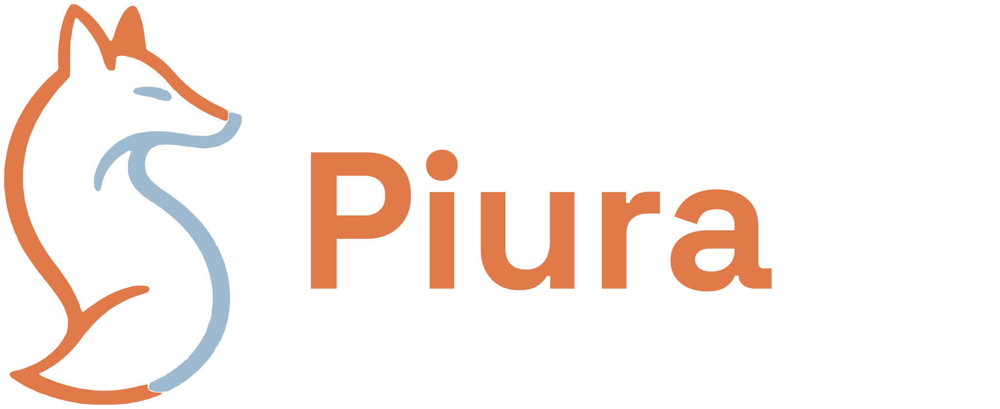

Guía de marca
Logo, colores, tipografía y reglas de uso de la comunidad Piura AI.
01 · Logo
Tres formatos, un mismo zorro
El zorro andino es el símbolo de Piura AI: un animal de nuestra región, curioso y adaptable. Usa el formato que mejor encaje en el espacio disponible.
HorizontalVersión principal. Web, documentos, firmas y banners.
CuadradoEspacios cuadrados o verticales: afiches, polos, sellos.
ÍconoAvatares, favicon y tamaños muy pequeños.
02 · Versiones
Para fondo claro, oscuro y a una tinta
Cada formato viene en cuatro versiones. Todas están en SVG y en PNG con fondo transparente; el PNG “con fondo” ya trae el color recomendado.
Color · fondo claroLa versión por defecto. Sobre crema o blanco.
Color · fondo oscuroTonos aclarados para azul marino o negro.
Una tinta · azulImpresión a un color, sellos y grabados.
Una tinta · blancoSobre fotos oscuras o colores intensos.
04 · Colores
Crema, azul marino y terracota
La base es cálida y sobria. La terracota es el único color de acción: úsala para botones, enlaces y acentos, nunca para fondos grandes de texto.
TerracotaHEX #A8502A · RGB 168 80 42
Botones, enlaces, acentos
Azul marinoHEX #22384A · RGB 34 56 74
Titulares y fondos oscuros
CremaHEX #F6F3EC · RGB 246 243 236
Fondo base
BlancoHEX #FFFFFF · RGB 255 255 255
Tarjetas y secciones alternas
TintaHEX #1F2E38 · RGB 31 46 56
Texto principal
Gris azuladoHEX #4A5A63 · RGB 74 90 99
Texto secundario
LíneaHEX #E7E2D5 · RGB 231 226 213
Bordes y divisores
Terracota suaveHEX #F0B79B · RGB 240 183 155
Acentos sobre azul marino
04 · Colores
Los colores del zorro
El logo tiene sus propios tonos, un poco más vivos que los de la interfaz. Son solo para el logo: no los uses en textos ni botones.
Naranja zorroHEX #CB5F31 · RGB 203 95 49
Logo sobre fondo claro
Azul zorroHEX #3B5973 · RGB 59 89 115
Logo sobre fondo claro
Naranja claroHEX #E07A4B · RGB 224 122 75
Logo sobre fondo oscuro
Azul claroHEX #9FB9CF · RGB 159 185 207
Logo sobre fondo oscuro
- Proporción recomendada: alrededor de 70 % crema o blanco, 20 % azul marino y 10 % terracota.
- Texto sobre color: blanco sobre terracota y sobre azul marino; tinta sobre crema y blanco.
05 · Tipografía
Dos familias, ambas gratuitas
Space Grotesk · titulares
Aa Piura AI
Pesos 600 y 700. Titulares, cifras y el logotipo. Interletrado ligeramente cerrado (−2 %).
Comunidad de IA en Piura
Próximos eventos
fonts.google.com/specimen/Space+Grotesk
IBM Plex Sans · cuerpo
Aa Bb Cc 123
Pesos 400, 500 y 600. Párrafos, botones, etiquetas y menús. Interlineado de 1,5 a 1,6.
Impulsamos el desarrollo responsable, la innovación práctica y la ética en inteligencia artificial.
Unirse a la comunidad
fonts.google.com/specimen/IBM+Plex+Sans
Si no puedes instalar fuentes (por ejemplo, en Canva o Google Slides), ambas están disponibles ahí con el mismo nombre. Como último recurso, usa Arial.
07 · Archivos del kit
Qué archivo usar
branding/
├─ logo-horizontal/ principal
├─ logo-cuadrado/ zorro arriba, texto abajo
├─ icono/ solo el zorro
│ cada una de las tres trae:
│ ├─ svg/ vector, la mejor calidad
│ ├─ png-transparente/ sin fondo
│ └─ png-con-fondo/ con el color recomendado
├─ redes/ avatares 1000×1000
├─ colores/ paleta en CSS y JSON
├─ LEEME.md
└─ Guia-de-marca-Piura-AI.pdf
- SVG: para diseño, imprenta y web. Es la mejor calidad.
- PNG transparente: para presentaciones, documentos y redes, sobre tu propio fondo.
- PNG con fondo: cuando necesitas una imagen lista para pegar.
- Nombres:
color-fondo-claro y color-fondo-oscuro indican sobre qué fondo va cada versión; una-tinta-azul y una-tinta-blanco son de un solo color.
- Dudas o piezas nuevas: contacto@piura-ai.org